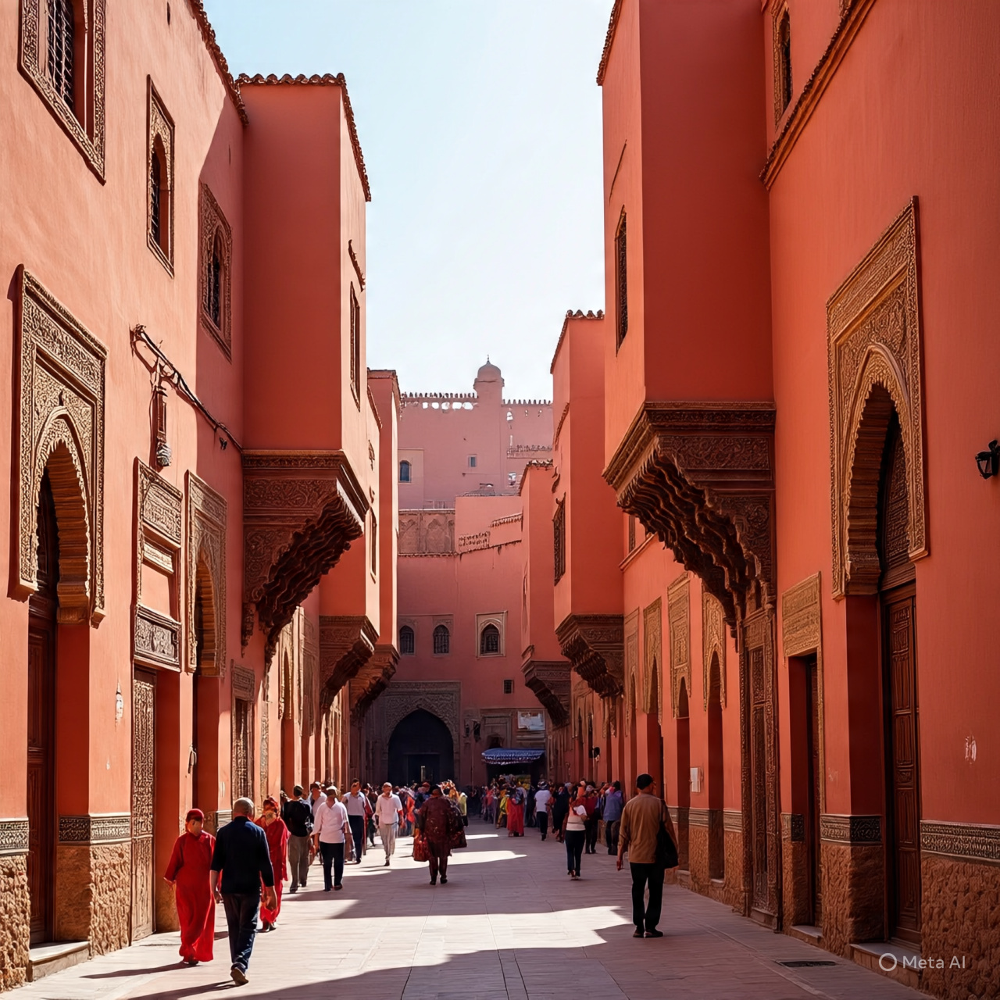
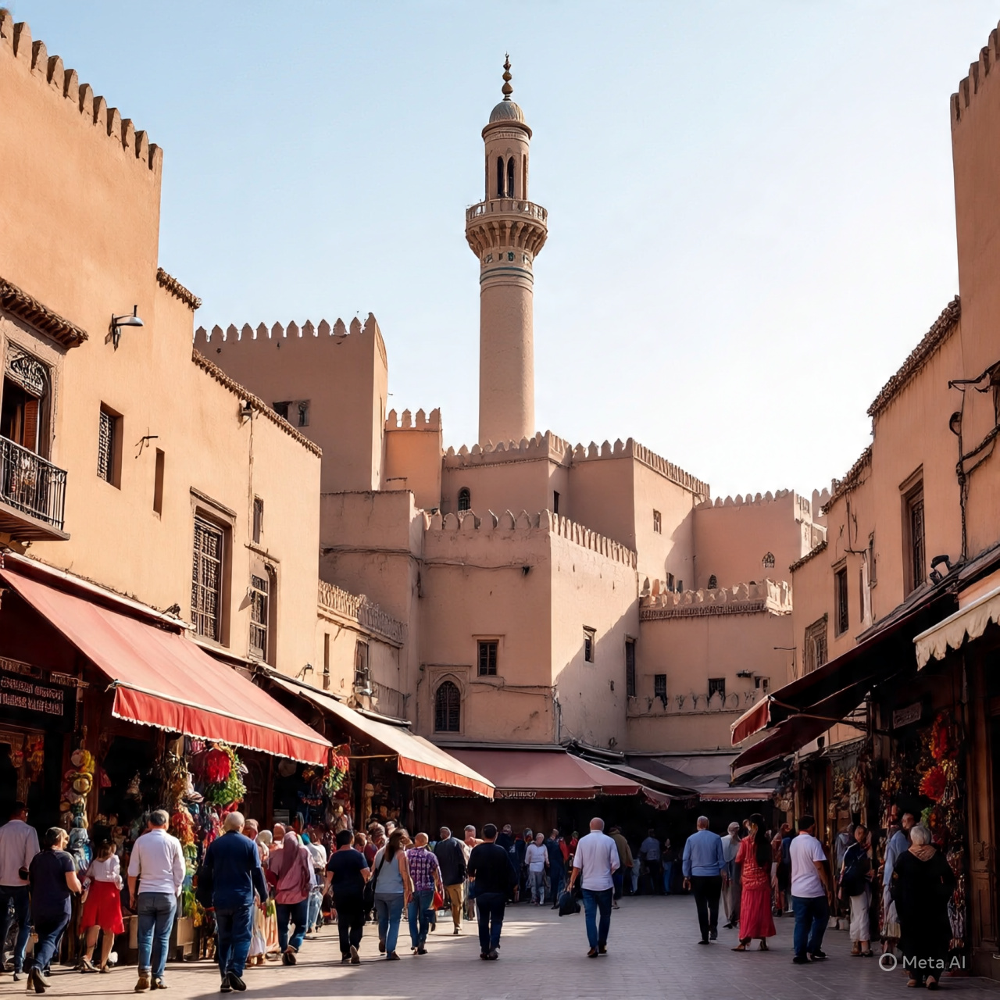
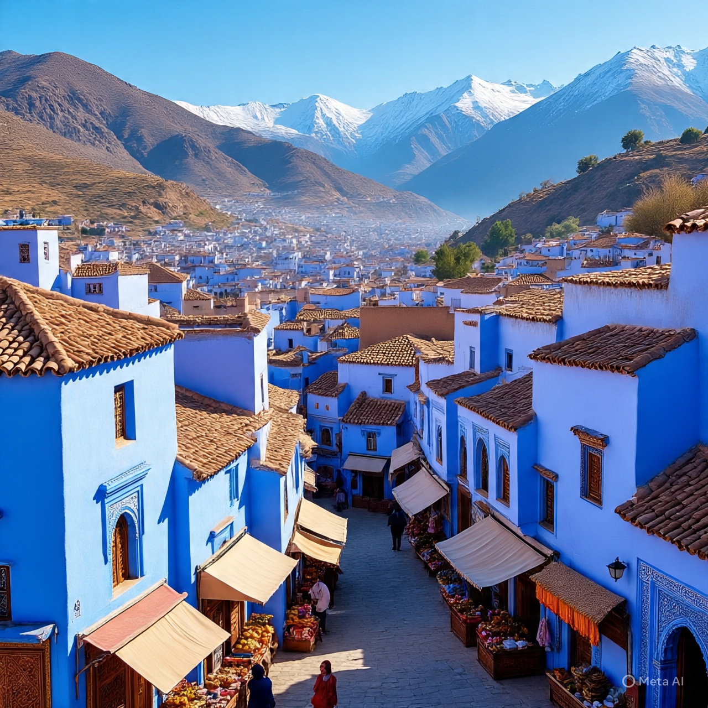
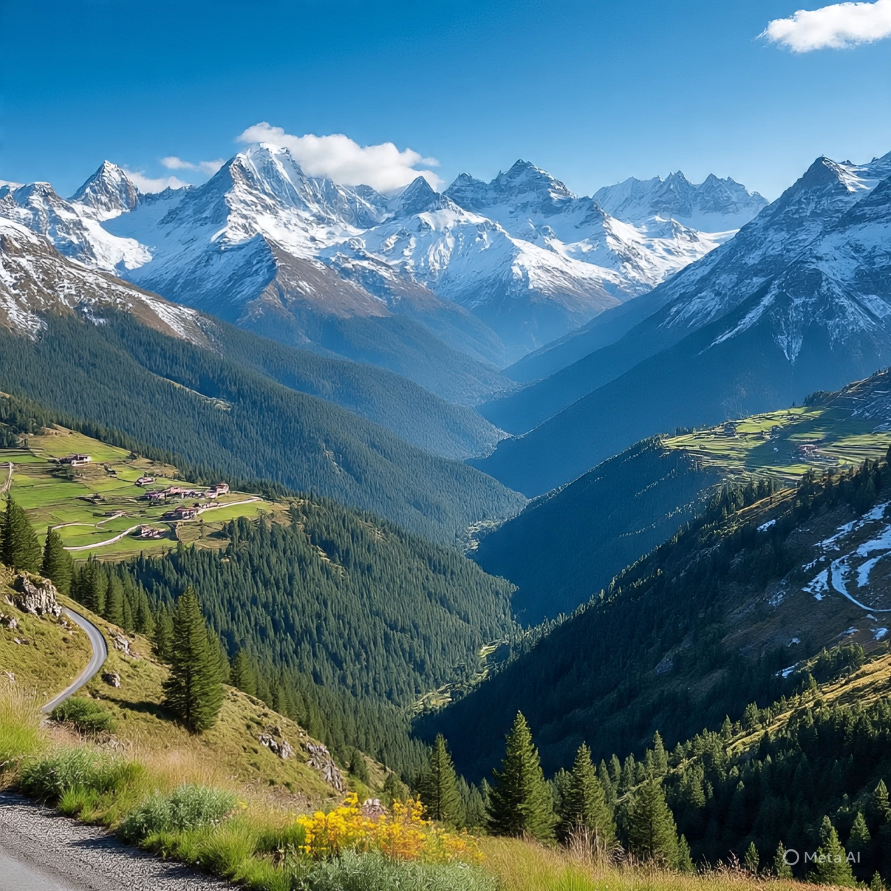
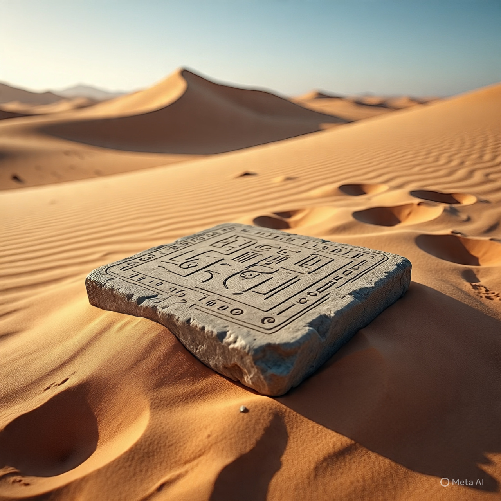
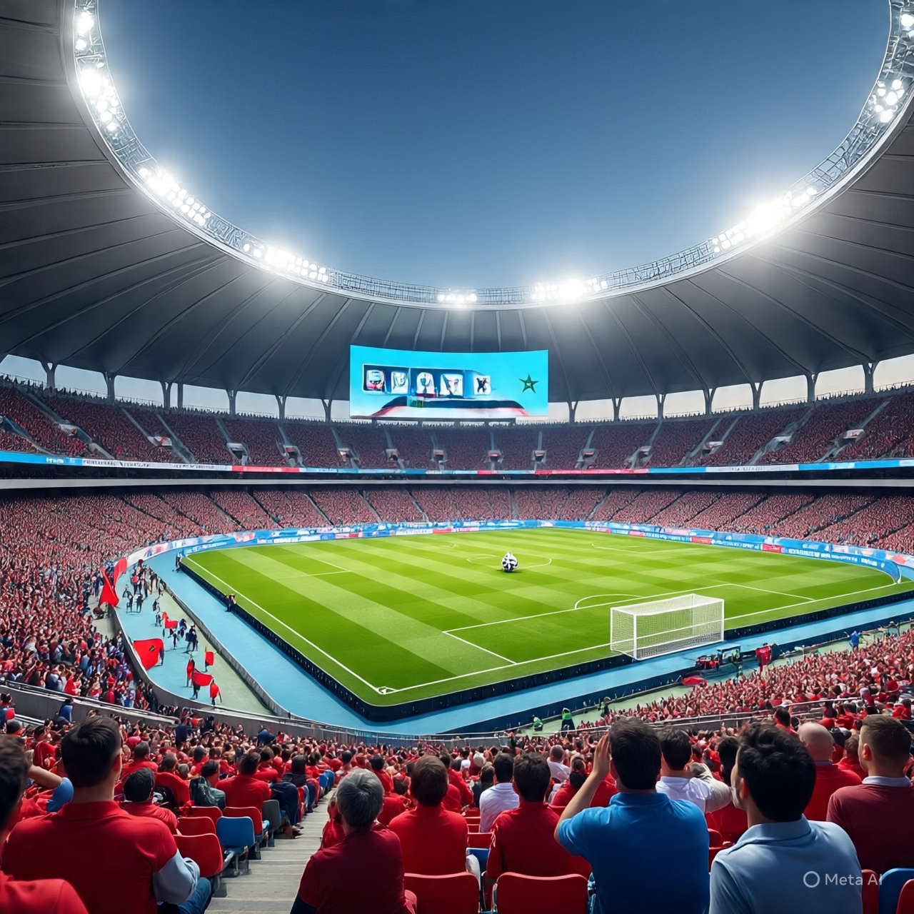
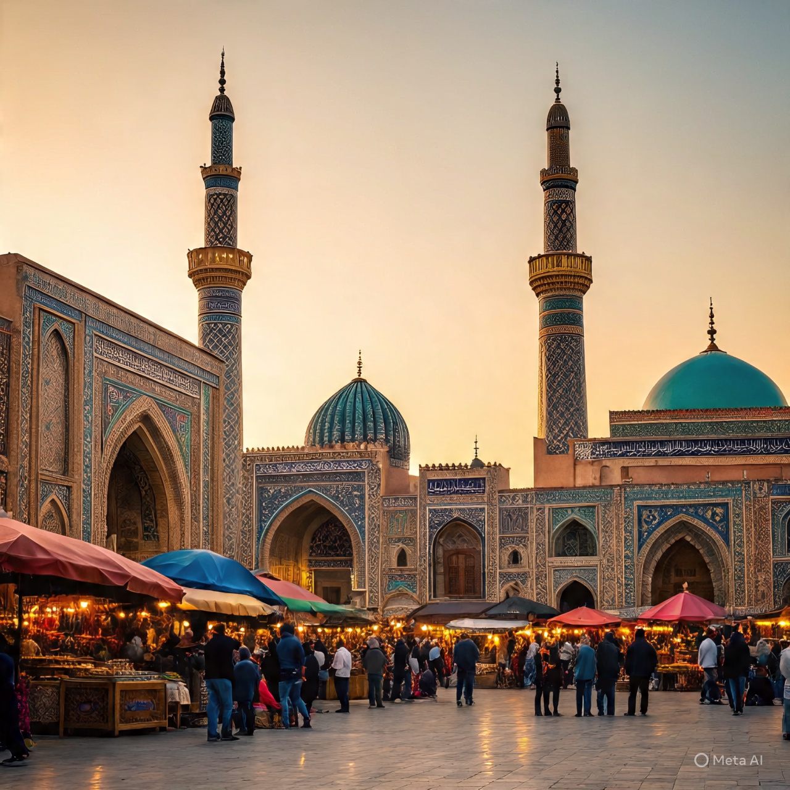

Maroc: Découvert d'un pays riche en culture
- Explorez les rues de Marrakech, découvrez les secrets du desert de Merzouga et découvrez la beauté de l'Atlas
Le Maroc : entre culture et désert

Marrakech : La ville rouge te ses souks animés C'est une ville tres exellente à parcourir. Dans cette ville c'est que de belles histoires .
Fes: la Medina la plus encienne du Maroc. C'est l' une des ville les plius passionnante en afriqiue
Chefchouen : la ville bleue dans les montagnes.
Belle nature
Le desert au multiple mysteres! Le desrt du Maroc est un must ! Les paysages de dunes sonts à couper Le soufle.
Magnifique stade du maroc Magnifique mosquée lieu de priere des marocains
Magnifique mosquée lieu de priere des marocains

Un marché muticolor : Visiter le marché du maroc et découvrez de magnifiques chosesCulture et histoire du Maroc
Le maroc est un pays avec une histoire riches
Culture
Le maroc à une belle culture qui fait de lui un site tiuristique beau à visiter
Histoire
une histoire dynamique du maroc vous fera du bien bonnnnnnnnnnnn